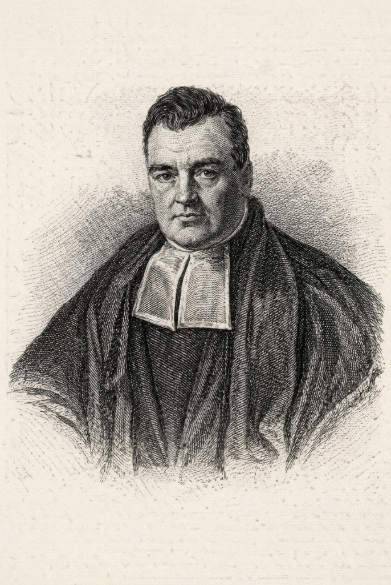

随机事件的概率
本章我们从最基本的概念出发，建立概率论的公理化体系。通过韦恩图理解事件的关系，掌握三大公式（加法、乘法、全概率）的核心逻辑。
试验与事件
满足以下条件的试验称为随机试验 ($E$)：
- 试验可以在相同条件下重复进行；
- 试验的所有可能结果是已知的，且不止一个；
- 每次试验前不能确定会出现哪个结果。
样本空间 ($\Omega$)：随机试验所有可能结果的集合。
样本点 ($\omega$)：样本空间中的每一个元素。
概率的公理化定义
设 $\Omega$ 是样本空间，$A$ 是随机事件，概率 $P(A)$ 满足：
- 非负性：$P(A) \ge 0$
- 规范性：$P(\Omega) = 1$
- 可列可加性：若 $A_1, A_2, ...$ 互不相容，则 $P(\bigcup_{i=1}^{\infty} A_i) = \sum_{i=1}^{\infty} P(A_i)$
古典概型
前提：有限性（样本空间有限）、等可能性（每个样本点发生概率相等）。
条件概率
设 $A, B$ 是两个事件，且 $P(B) > 0$，称
$P(A|B) = \frac{P(AB)}{P(B)}$
为在事件 $B$ 发生的条件下，事件 $A$ 发生的条件概率。
设 $B_1, B_2, \dots, B_n$ 是样本空间 $\Omega$ 的一个划分，且 $P(B_i) > 0$，则对于任一事件 $A$ ($P(A) > 0$)：
$P(B_i|A) = \frac{P(B_i)P(A|B_i)}{\sum_{j=1}^n P(B_j)P(A|B_j)}$
事件的独立性
若事件 $A, B$ 满足：
$P(AB) = P(A)P(B)$
则称事件 $A, B$ 相互独立。
课程思政教育案例
科尔莫戈罗夫：公理化体系的奠基人
20世纪最伟大的数学家之一，他通过三条简洁的公理，将原本零散的概率计算统一为严谨的数学分支。他的故事激励我们：复杂的表象下往往隐藏着简洁的逻辑，勇于探索本质是科学进步的动力。

托马斯·贝叶斯：逆向思维的力量
贝叶斯公式不仅是数学工具，更是一种认知哲学。它告诉我们：面对新证据，我们要敢于修正旧认知。 在信息爆炸的时代，保持理性判断、不断优化逻辑，是当代大学生必备的素养。

概率论在社会生活中的价值
从工程质量检测到社会保险评估，概率统计无处不在。通过学习，我们不仅掌握了专业技能，更培养了严谨的科学态度和强烈的社会责任感，为建设美丽北京、美丽中国贡献智慧。